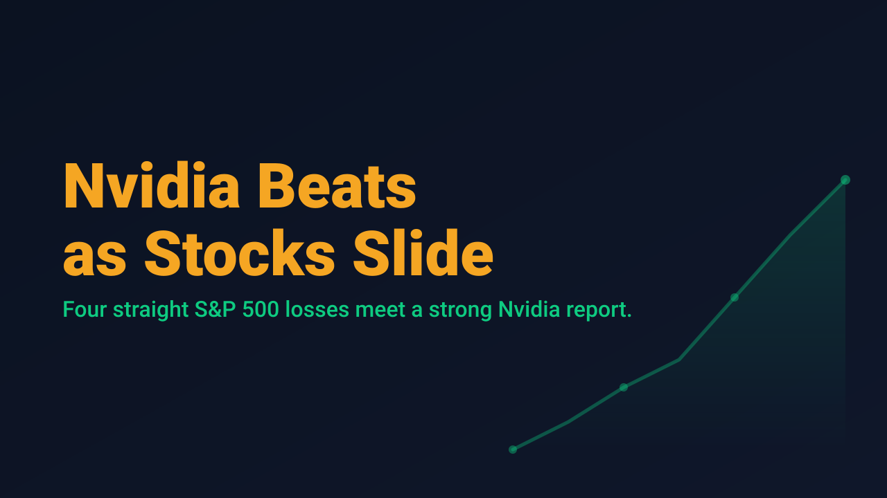
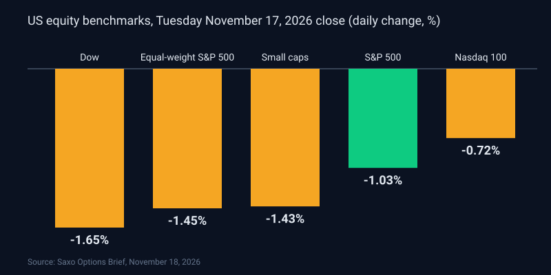

Nvidia Beats as Stocks Slide

The S&P 500 closed Tuesday at 7,340.53, down 1.03%, its fourth consecutive loss and its lowest close since July, according to Saxo's November 18 options brief. The Dow fell 1.65% and the Nasdaq 100 slipped 0.72%, while the equal-weighted S&P 500 dropped 1.45% and small caps lost 1.43%. The pattern matters: the equal-weighted index and small caps fell by more than the cap-weighted S&P 500, which means the damage was broad rather than concentrated in a few mega-cap names. Breadth data from MadeForTrade confirm it, with 1,864 advancing issues against 5,818 decliners across the NYSE and Nasdaq, and 1,202 stocks setting 52-week lows against only 49 setting highs.
Into that weakness came Nvidia's fiscal third-quarter report after the close. Revenue was $115.8 billion against a consensus of about $109 billion, and fourth-quarter guidance of $130 billion, plus or minus 3%, compared with an LSEG analyst average of $125.25 billion, per ABC News. Saxo reported the shares up 4.8% after the close. Options had priced a move of about 7.7% for the report, which is 1.9 times the stock's 4.0% average move over its last eight reports, so a gain of that size sat inside what the market had already paid for. Nvidia itself had closed at 155.46, down 0.44%, before the release.

The volatility surface is where the more useful signal sits. Saxo's one-day volatility gauge stood at 26.84, above the VIX at 25.46, the three-month VIX3M at 24.98, and the year-ahead reading of 24.77. That is an inverted front end: the next session was priced as more expensive than the next three months. Saxo's S&P 500 implied move for Friday's expiry was about 2.04%, or 149.75 points. Implied correlation rose to 18.74 against a 60-session median of 11.73, a sign that options traders expected stocks to move together on macro news rather than on single-name results.
Single-name earnings reaction has been muted by comparison. Of 21 other reports in Saxo's sample, 17 moved less than the options market priced, and the median realised move was about half the expected move. Alphabet was the exception, down 12.6% against 5.5% priced. On flow, Saxo noted no clear overall direction in single names, with upside Nvidia positions bought ahead of results, and index put buying concentrated in long-dated contracts rather than near-term protection. The 10-year Treasury yield eased to 5.08% from 5.13%.
For a swing trader, the practical point is that a strong print did not change the tape. Four straight index losses, deteriorating breadth, and an inverted volatility curve describe a market that is pricing event risk across the whole index, not just in one stock. Sizing a new long entry into that backdrop requires more than a favourable headline from one company.
Disagreement among inputs is itself information. When fundamentals improve while breadth and volatility deteriorate, patience and smaller size are usually more defensible than conviction. The next test is whether index breadth stabilises once the earnings event passes and implied volatility resets.